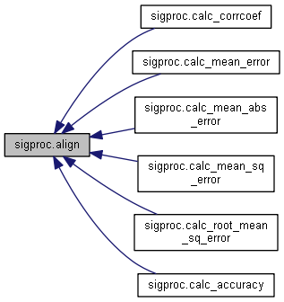
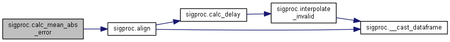

信号処理用パッケージ More...
Functions | |
| def | __cast_ndarray (input) |
| 型変換(np.ndarray) More... | |
| def | __cast_dataframe (input) |
| 型変換(pd.DataFrame) More... | |
| def | calc_section_average |
| 区間平均算出 More... | |
| def | calc_section_std_dev |
| 区間標準偏差算出 More... | |
| def | calc_section_mode |
| 区間最頻値算出 More... | |
| def | interpolate_invalid |
| 無効値補間 More... | |
| def | drop_invalid |
| 無効値除外 More... | |
| def | calc_corrfunc |
| 相関関数算出 More... | |
| def | calc_delay |
| 遅延算出 More... | |
| def | align |
| 測定信号-参照信号間の遅延補正とデータ長の統一 More... | |
| def | calc_corrcoef |
| 相関係数算出 More... | |
| def | calc_mean_error |
| 平均誤差(ME)算出 More... | |
| def | calc_mean_abs_error |
| 平均絶対誤差(MAE)算出 More... | |
| def | calc_mean_sq_error |
| 平均二乗誤差(RSE)算出 More... | |
| def | calc_root_mean_sq_error |
| 平均平方二乗誤差(RMSE)算出 More... | |
| def | calc_accuracy |
| 正答率(絶対誤差が閾値以内に収まる割合)算出 More... | |
Variables | |
| logger = getLogger(__name__) | |
Detailed Description
信号処理用パッケージ
信号処理用に作成した関数を簡易的にまとめています。
- Date
- 2018.11.27
- Version
- 0.1
Function Documentation
◆ __cast_dataframe()
|
private |
型変換(pd.DataFrame)
- Parameters
-
input 入力信号
- Returns
- output_df 出力信号(pd.DataFrame)
Here is the caller graph for this function:
◆ __cast_ndarray()
|
private |
型変換(np.ndarray)
- Parameters
-
input 入力信号
- Returns
- output_nd 出力信号(np.ndarray)
Here is the caller graph for this function:
◆ align()
| def sigproc.align | ( | data_meas | ) |
測定信号-参照信号間の遅延補正とデータ長の統一
- Parameters
-
data_meas 測定信号 data_ref 参照信号 invalid_values 無効値 delay 遅延
- Returns
- aligned_meas データ長調整後の測定信号(ndarray型)
- aligned_ref データ長調整後の参照信号(ndarray型)
Here is the call graph for this function:
Here is the caller graph for this function:

◆ calc_accuracy()
| def sigproc.calc_accuracy | ( | data_meas | ) |
正答率(絶対誤差が閾値以内に収まる割合)算出
- Parameters
-
data_meas 測定信号 data_ref 参照信号 threshold 閾値 invalid_values 無効値 delay 遅延
- Returns
- accuracy 正答率
Here is the call graph for this function:
◆ calc_corrcoef()
| def sigproc.calc_corrcoef | ( | data_meas | ) |
相関係数算出
- Parameters
-
data_meas 測定信号 data_ref 参照信号 invalid_values 無効値 delay 遅延
- Returns
- corrcoef 相関係数
Here is the call graph for this function:
◆ calc_corrfunc()
| def sigproc.calc_corrfunc | ( | data_meas | ) |
相関関数算出
- Parameters
-
data_meas 測定信号 data_ref 参照信号 invalid_values 無効値
- Returns
- corrfunc 相関関数
Here is the call graph for this function:
◆ calc_delay()
| def sigproc.calc_delay | ( | data_meas | ) |
遅延算出
- Parameters
-
data_meas 測定信号 data_ref 参照信号 invalid_values 無効値
- Returns
- delay 遅延 _delay>0 : 測定信号のほうが遅い _delay<0 : 測定信号のほうが早い
Here is the call graph for this function:

Here is the caller graph for this function:
◆ calc_mean_abs_error()
| def sigproc.calc_mean_abs_error | ( | data_meas | ) |
平均絶対誤差(MAE)算出
- Parameters
-
data_meas 測定信号 data_ref 参照信号 invalid_values 無効値 delay 遅延
- Returns
- mean_abs_error 平均絶対誤差
Here is the call graph for this function:

◆ calc_mean_error()
| def sigproc.calc_mean_error | ( | data_meas | ) |
平均誤差(ME)算出
- Parameters
-
data_meas 測定信号 data_ref 参照信号 invalid_values 無効値 delay 遅延
- Returns
- mean_error 平均誤差
Here is the call graph for this function:
◆ calc_mean_sq_error()
| def sigproc.calc_mean_sq_error | ( | data_meas | ) |
平均二乗誤差(RSE)算出
- Parameters
-
data_meas 測定信号 data_ref 参照信号 invalid_values 無効値 delay 遅延
- Returns
- mean_sq_error 平均二乗誤差
Here is the call graph for this function:
◆ calc_root_mean_sq_error()
| def sigproc.calc_root_mean_sq_error | ( | data_meas | ) |
平均平方二乗誤差(RMSE)算出
- Parameters
-
data_meas 測定信号 data_ref 参照信号 invalid_values 無効値 delay 遅延
- Returns
- root_mean_sq_error 平均平方二乗誤差
Here is the call graph for this function:
◆ calc_section_average()
| def sigproc.calc_section_average | ( | input | ) |
区間平均算出
- Parameters
-
input 入力信号 window 窓区間幅 ofset =0 オフセット
- Returns
- section_average 区間平均(np.ndarray)
Here is the call graph for this function:
◆ calc_section_mode()
| def sigproc.calc_section_mode | ( | input | ) |
区間最頻値算出
- Parameters
-
input 入力信号 window 窓区間幅 ofset =0 オフセット
- Returns
- section_mode 区間最頻値(np.ndarray)
Here is the call graph for this function:
◆ calc_section_std_dev()
| def sigproc.calc_section_std_dev | ( | input | ) |
区間標準偏差算出
- Parameters
-
input 入力信号 window 窓区間幅 ofset =0 オフセット
- Returns
- section_std_dev 区間標準偏差(np.ndarray)
Here is the call graph for this function:
◆ drop_invalid()
| def sigproc.drop_invalid | ( | input | ) |
無効値除外
- Parameters
-
input 入力信号 invalid_values 無効値
- Returns
- invalidated 無効値除外(np.nan)後信号(np.ndarray)
Here is the call graph for this function:
◆ interpolate_invalid()
| def sigproc.interpolate_invalid | ( | input | ) |
無効値補間
- Parameters
-
input 入力信号 invalid_values 無効値
- Returns
- interpolated 無効値補間後信号(np.ndarray)
Here is the call graph for this function:
Here is the caller graph for this function:
Variable Documentation
◆ logger
| sigproc.logger = getLogger(__name__) |